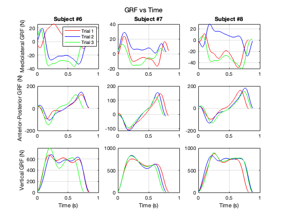
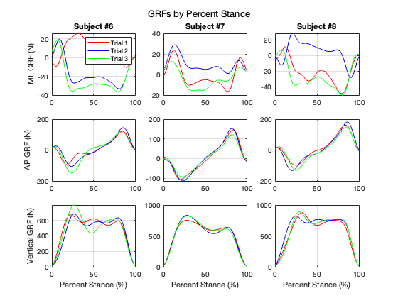
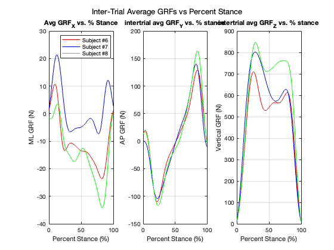

Contents
Walking Stance analysis **
close all
clearvars
clc
load the grfStance.mat
load("grfStance.mat");
plot GRFs by time
Plot a single figure with 9 subplots where each row is a direction (vertical, AP, ML) and each column is a subject. In each subplot, plot the 3 stance trials where the x-axis is TIME IN SECONDS and the y-axis is the GRF for the direction of the row. Each trial should be distinguishable, either by different colors or different line types.
use title for the top row of subplots to label the column by the subject number use ylabel for the first column of subplots to add a ylabel use xlabel for the bottom row of subplots to add xlabels use sgtitle to add a supertitle for the whole figure
Use mediolateral GRF, anterior-posterior GRF, and vertical GRF terminology for your labels. You'll need to apply your biomechanics knowledge to figure out which one matches up with X,Y,and Z.
include units in the xlabels and ylabels add a legend for 1 of the subplots, assuming the same scheme is used for distinguishing trial types.
figure; %First Column subplot(3,3,1) %First Row plot(S6_Stance_1.time, S6_Stance_1.GRF_X, 'r', 'DisplayName', 'GRF X'); hold on; plot(S6_Stance_2.time, S6_Stance_2.GRF_X, 'b', 'DisplayName', 'COP Y'); plot(S6_Stance_3.time, S6_Stance_3.GRF_X, 'g', 'DisplayName', 'COP Z'); ylabel('Mediolateral GRF (N)'); title('Subject #6'); legend('Trial 1', 'Trial 2', 'Trial 3'); grid on; subplot(3,3,4) %Second Row plot(S6_Stance_1.time, S6_Stance_1.GRF_Y, 'r', 'DisplayName', 'GRF X'); hold on; plot(S6_Stance_2.time, S6_Stance_2.GRF_Y, 'b', 'DisplayName', 'COP Y'); plot(S6_Stance_3.time, S6_Stance_3.GRF_Y, 'g', 'DisplayName', 'COP Z'); ylabel('Anterior-Posterior GRF (N)'); grid on; subplot(3,3,7) %Third Row plot(S6_Stance_1.time, S6_Stance_1.GRF_Z, 'r', 'DisplayName', 'GRF X'); hold on; plot(S6_Stance_2.time, S6_Stance_2.GRF_Z, 'b', 'DisplayName', 'COP Y'); plot(S6_Stance_3.time, S6_Stance_3.GRF_Z, 'g', 'DisplayName', 'COP Z'); xlabel('Time (s)'); ylabel('Vertical GRF (N)'); grid on; %Second Column subplot(3,3,2) %First Row plot(S7_Stance_1.time, S7_Stance_1.GRF_X, 'r', 'DisplayName', 'GRF X'); hold on; plot(S7_Stance_2.time, S7_Stance_2.GRF_X, 'b', 'DisplayName', 'COP Y'); plot(S7_Stance_3.time, S7_Stance_3.GRF_X, 'g', 'DisplayName', 'COP Z'); title('Subject #7'); grid on; subplot(3,3,5) %Second Row plot(S7_Stance_1.time, S7_Stance_1.GRF_Y, 'r', 'DisplayName', 'GRF X'); hold on; plot(S7_Stance_2.time, S7_Stance_2.GRF_Y, 'b', 'DisplayName', 'COP Y'); plot(S7_Stance_3.time, S7_Stance_3.GRF_Y, 'g', 'DisplayName', 'COP Z'); grid on; subplot(3,3,8) %Third Row plot(S7_Stance_1.time, S7_Stance_1.GRF_Z, 'r', 'DisplayName', 'GRF X'); hold on; plot(S7_Stance_2.time, S7_Stance_2.GRF_Z, 'b', 'DisplayName', 'COP Y'); plot(S7_Stance_3.time, S7_Stance_3.GRF_Z, 'g', 'DisplayName', 'COP Z'); xlabel('Time (s)'); grid on; %Third Column subplot(3,3,3) %First Row plot(S8_Stance_1.time, S8_Stance_1.GRF_X, 'r', 'DisplayName', 'GRF X'); hold on; plot(S8_Stance_2.time, S8_Stance_2.GRF_X, 'b', 'DisplayName', 'COP Y'); plot(S8_Stance_3.time, S8_Stance_3.GRF_X, 'g', 'DisplayName', 'COP Z'); title('Subject #8'); grid on; subplot(3,3,6) %Second Row plot(S8_Stance_1.time, S8_Stance_1.GRF_Y, 'r', 'DisplayName', 'GRF X'); hold on; plot(S8_Stance_2.time, S8_Stance_2.GRF_Y, 'b', 'DisplayName', 'COP Y'); plot(S8_Stance_3.time, S8_Stance_3.GRF_Y, 'g', 'DisplayName', 'COP Z'); grid on; subplot(3,3,9) %Third Row plot(S8_Stance_1.time, S8_Stance_1.GRF_Z, 'r', 'DisplayName', 'GRF X'); hold on; plot(S8_Stance_2.time, S8_Stance_2.GRF_Z, 'b', 'DisplayName', 'COP Y'); plot(S8_Stance_3.time, S8_Stance_3.GRF_Z, 'g', 'DisplayName', 'COP Z'); xlabel('Time (s)'); sgtitle('GRF vs Time'); grid on;
plot GRFs by percent stance
Plot a single figure with 9 subplots where each row is a direction (vertical, AP, ML) and each column is a subject. In each subplot, plot the 3 stance trials where the x-axis is PERCENT STANCE and the y-axis is the GRF for the direction of the row. Each trial should be distinguishable, either by different colors or different line types.
to get percent stance, divide the time vector by the max time and multiple by 100 e.g. S6_Stance_1.time/S6_Stance_1.time(end)*100
use title for the top row of subplots to label the column by the subject number use ylabel for the first column of subplots to add a ylabel use xlabel for the bottom row of subplots to add xlabels use sgtitle to add a supertitle for the whole figure
Use mediolateral GRF, anterior-posterior GRF, and vertical GRF terminology for your labels. You'll need to apply your biomechanics knowledge to figure out which one matches up with X,Y,and Z.
include units in the xlabels and ylabels add a legend for 1 of the subplots, assuming the same scheme is used for distinguishing trial types.
figure; %calculating percent percent_stance_S6 = S6_Stance_1.time / S6_Stance_1.time(end) * 100; percent_stance_S7 = S7_Stance_1.time / S7_Stance_1.time(end) * 100; percent_stance_S8 = S8_Stance_1.time / S8_Stance_1.time(end) * 100; % First Column - ML GRF subplot(3,3,1); % Subject 6 plot(percent_stance_S6, S6_Stance_1.GRF_X, 'r', 'DisplayName', 'Trial 1'); hold on; plot(percent_stance_S6, S6_Stance_2.GRF_X, 'b', 'DisplayName', 'Trial 2'); plot(percent_stance_S6, S6_Stance_3.GRF_X, 'g', 'DisplayName', 'Trial 3'); ylabel('ML GRF (N)'); title('Subject #6'); legend('show'); grid on; subplot(3,3,2); % Subject 7 plot(percent_stance_S7, S7_Stance_1.GRF_X, 'r', 'DisplayName', 'Trial 1'); hold on; plot(percent_stance_S7, S7_Stance_2.GRF_X, 'b', 'DisplayName', 'Trial 2'); plot(percent_stance_S7, S7_Stance_3.GRF_X, 'g', 'DisplayName', 'Trial 3'); title('Subject #7'); grid on; subplot(3,3,3); % Subject 8 plot(percent_stance_S8, S8_Stance_1.GRF_X, 'r', 'DisplayName', 'Trial 1'); hold on; plot(percent_stance_S8, S8_Stance_2.GRF_X, 'b', 'DisplayName', 'Trial 2'); plot(percent_stance_S8, S8_Stance_3.GRF_X, 'g', 'DisplayName', 'Trial 3'); title('Subject #8'); grid on; % Second Row - AP GRF subplot(3,3,4); % Subject 6 plot(percent_stance_S6, S6_Stance_1.GRF_Y, 'r', 'DisplayName', 'Trial 1'); hold on; plot(percent_stance_S6, S6_Stance_2.GRF_Y, 'b', 'DisplayName', 'Trial 2'); plot(percent_stance_S6, S6_Stance_3.GRF_Y, 'g', 'DisplayName', 'Trial 3'); ylabel('AP GRF (N)'); grid on; subplot(3,3,5); % Subject 7 plot(percent_stance_S7, S7_Stance_1.GRF_Y, 'r', 'DisplayName', 'Trial 1'); hold on; plot(percent_stance_S7, S7_Stance_2.GRF_Y, 'b', 'DisplayName', 'Trial 2'); plot(percent_stance_S7, S7_Stance_3.GRF_Y, 'g', 'DisplayName', 'Trial 3'); grid on; subplot(3,3,6); % Subject 8 plot(percent_stance_S8, S8_Stance_1.GRF_Y, 'r', 'DisplayName', 'Trial 1'); hold on; plot(percent_stance_S8, S8_Stance_2.GRF_Y, 'b', 'DisplayName', 'Trial 2'); plot(percent_stance_S8, S8_Stance_3.GRF_Y, 'g', 'DisplayName', 'Trial 3'); grid on; % Third Row - Vertical GRF subplot(3,3,7); % Subject 6 plot(percent_stance_S6, S6_Stance_1.GRF_Z, 'r', 'DisplayName', 'Trial 1'); hold on; plot(percent_stance_S6, S6_Stance_2.GRF_Z, 'b', 'DisplayName', 'Trial 2'); plot(percent_stance_S6, S6_Stance_3.GRF_Z, 'g', 'DisplayName', 'Trial 3'); xlabel('Percent Stance (%)'); ylabel('Vertical GRF (N)'); grid on; subplot(3,3,8); % Subject 7 plot(percent_stance_S7, S7_Stance_1.GRF_Z, 'r', 'DisplayName', 'Trial 1'); hold on; plot(percent_stance_S7, S7_Stance_2.GRF_Z, 'b', 'DisplayName', 'Trial 2'); plot(percent_stance_S7, S7_Stance_3.GRF_Z, 'g', 'DisplayName', 'Trial 3'); xlabel('Percent Stance (%)'); grid on; subplot(3,3,9); % Subject 8 plot(percent_stance_S8, S8_Stance_1.GRF_Z, 'r', 'DisplayName', 'Trial 1'); hold on; plot(percent_stance_S8, S8_Stance_2.GRF_Z, 'b', 'DisplayName', 'Trial 2'); plot(percent_stance_S8, S8_Stance_3.GRF_Z, 'g', 'DisplayName', 'Trial 3'); xlabel('Percent Stance (%)'); sgtitle('GRFs by Percent Stance'); grid on;
calculate and plot the inter-trial average GRF for each subject
Calculate the mean GRF_X of the 3 trials for S6. Repeat for S7 and S8. Plot the subject's intertrial average GRF_X vs. percent stance in the subplot(1,3,1)
make sure everything in the subplot is labeled. Use ML, AP, or vertical depending on what you determin GRF_Y to be you can create one variable for percent stance. Even though the times of each trial are different, the number of points is the same. So taking the time, dividing by the max time, and mutliplying by 100 will give the same vector for all datasets. Plot the subject's intertrial average GRF_Y vs. percent stance in the subplot(1,3,2)
make sure everything in the subplot is labeled. Use ML, AP, or vertical depending on what you determin GRF_Y to be Plot the subject's intertrial average GRF_Z vs. percent stance in the subplot(1,3,3)
make sure everything in the subplot is labeled. Use ML, AP, or vertical depending on what you determin GRF_Y to be
%Subject 6 mean_GRF_X_S6 = mean([S6_Stance_1.GRF_X, S6_Stance_2.GRF_X, S6_Stance_3.GRF_X], 2); mean_GRF_Y_S6 = mean([S6_Stance_1.GRF_Y, S6_Stance_2.GRF_Y, S6_Stance_3.GRF_Y], 2); mean_GRF_Z_S6 = mean([S6_Stance_1.GRF_Z, S6_Stance_2.GRF_Z, S6_Stance_3.GRF_Z], 2); %Subject 7 mean_GRF_X_S7 = mean([S7_Stance_1.GRF_X, S7_Stance_2.GRF_X, S7_Stance_3.GRF_X], 2); mean_GRF_Y_S7 = mean([S7_Stance_1.GRF_Y, S7_Stance_2.GRF_Y, S7_Stance_3.GRF_Y], 2); mean_GRF_Z_S7 = mean([S7_Stance_1.GRF_Z, S7_Stance_2.GRF_Z, S7_Stance_3.GRF_Z], 2); %Subject 8 mean_GRF_X_S8 = mean([S8_Stance_1.GRF_X, S8_Stance_2.GRF_X, S8_Stance_3.GRF_X], 2); mean_GRF_Y_S8 = mean([S8_Stance_1.GRF_Y, S8_Stance_2.GRF_Y, S8_Stance_3.GRF_Y], 2); mean_GRF_Z_S8 = mean([S8_Stance_1.GRF_Z, S8_Stance_2.GRF_Z, S8_Stance_3.GRF_Z], 2); figure; subplot(1,3,1); % ML GRF plot(percent_stance_S6, mean_GRF_X_S6, 'r', 'DisplayName', 'Subject 6'); hold on; plot(percent_stance_S7, mean_GRF_X_S7, 'b', 'DisplayName', 'Subject 7'); hold on; plot(percent_stance_S8, mean_GRF_X_S8, 'g', 'DisplayName', 'Subject 8'); hold on; ylabel('ML GRF (N)'); xlabel('Percent Stance (%)'); title('Avg GRF_X vs. % Stance'); legend('Subject #6', 'Subject #7', 'Subject #8'); grid on; subplot(1,3,2); % AP GRF plot(percent_stance_S6, mean_GRF_Y_S6, 'r', 'DisplayName', 'Subject 6'); hold on; plot(percent_stance_S7, mean_GRF_Y_S7, 'b', 'DisplayName', 'Subject 7'); hold on; plot(percent_stance_S8, mean_GRF_Y_S8, 'g', 'DisplayName', 'Subject 8'); hold on; ylabel('AP GRF (N)'); xlabel('Percent Stance (%)'); title('intertrial avg GRF_Y vs. % stance'); grid on; subplot(1,3,3); % Vertical GRF plot(percent_stance_S6, mean_GRF_Z_S6, 'r', 'DisplayName', 'Subject 6'); hold on; plot(percent_stance_S7, mean_GRF_Z_S7, 'b', 'DisplayName', 'Subject 7'); hold on; plot(percent_stance_S8, mean_GRF_Z_S8, 'g', 'DisplayName', 'Subject 8'); hold on; ylabel('Vertical GRF (N)'); xlabel('Percent Stance (%)'); title('intertrial avg GRF_Z vs. % stance'); grid on; sgtitle('Inter-Trial Average GRFs vs Percent Stance');